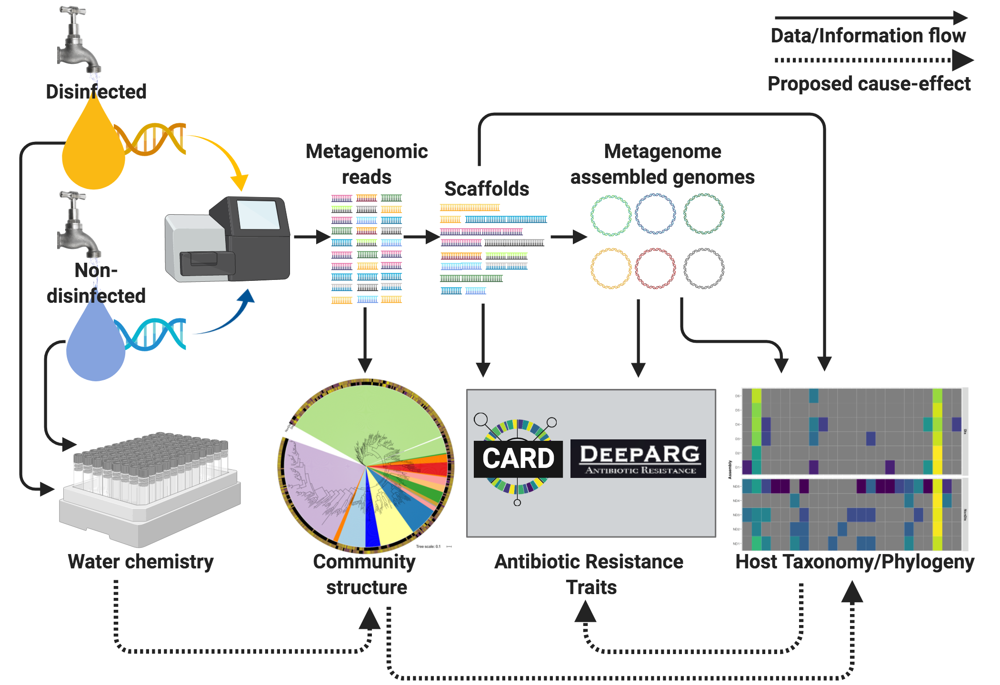

Antimicrobial Resistance in DWS
Survey of systems with and without disinfectant residual.
By Maria Sevillano et al. in Antibiotic resistance genes Drinking water Metagenomics Disinfection
July 1, 2019

Summary
Antimicrobial resistance (AMR) in drinking water has received less attention than its counterparts in the urban water cycle. While culture-based techniques or gene-centric PCR have been used to probe the impact of treatment approaches (e.g., disinfection) on AMR in drinking water, to our knowledge there is no systematic comparison of AMR trait distribution and prevalence between disinfected and disinfectant residual-free drinking water systems. We used metagenomics to assess the associations between disinfectant residuals and AMR prevalence and its host association in full-scale drinking water distribution systems (DWDSs) with and without disinfectant residuals. While the differences in AMR profiles between DWDSs were associated with the presence or absence of disinfectant, they were also associated with overall water chemistry and more importantly with microbial community structure. AMR genes and mechanisms differentially abundant in disinfected systems were primarily associated with nontuberculous mycobacteria (NTM). Finally, evaluation of metagenome assembled genomes(MAGs) also suggests that NTM possessing AMR genes conferring intrinsic resistance to key antibiotics were prevalent in disinfected systems, whereas such NTM genomes were not detected in disinfectant residual free DWDSs. Altogether, our findings provide insights into the drinking water resistome and its association with potential opportunistic pathogens, particularly in systems with disinfectant residual.